Karazhan Attunement Guide
Disturbances
The quest chain starts with two quests, namely Arcane Disturbances and Restless Activity. The quest giver is Archmage Alturus, located outside of the Tower of Karazhan. These two quests can be done in parallel.
For Arcane Disturbances, you will receive a Violet Scrying Crystal and need to take a reading from two water sources. Both water sources are located in the Master's Cellar. Use both of the two entrances, one for each reading.
Return to Archmage Alturus upon completion. Remember to also complete the following quest alongside this one.
Restless Activity
This is the second quest given by Archmage Alturus. The quest item, Ghostly Essence drops from all mobs inside the Master's Cellar, with a roughly 80% chance.
Contact from Dalaran
Bring Alturus's Report to Archmage Cedric in the outskirts of Dalaran.
This is a simple messenger quest, go to Dalaran in Alterac Mountains.
Khadgar
Deliver Alturus's Report to Khadgar in Shattrath City in Terokkar Forest.
This is a simple messenger quest, go to Khadgar in Shattrath City.
Get the key to Shadow Labyrinth
You need to get the Shadow Labyrinth Key.
This key can be obtained in Sethekk Halls after killing the last boss Talon King Ikiss in a chest which spawns behind him.
Here's a visual guide to Auchindoun's entrances.

Entry Into Karazhan
Khadgar wants you to enter the Shadow Labyrinth at Auchindoun and retrieve the First Key Fragment from an Arcane Container hidden there.
The Arcane Container is a glowing orb like object, to the left of Murmur in Shadow Labyrinth. Upon interacting with the object, a Fragment Guardian will spawn, an elite cloud-elemental, who will drop the First Key Fragment.
Note that it is enough for one person to spawn the Fragment Guardian, everybody will get the quest item.
Return to Khadgar.
Get the key to The Arcatraz
You need a flying mount to complete this step.
Complete the quest chain started by either Anchorite Karja (The Aldor) or Spymaster Thalodien (The Scryers), depending on which faction in Shattrath City you sided with. The first quest is Assisting the Consortium.
The last quest in the quest chain is How to Break Into the Arcatraz and requires you to go into both The Mechanar and The Botanica.
The Second and Third Fragments
Obtain the Second Key Fragment from an Arcane Container inside Coilfang Reservoir and the Third Key Fragment from an Arcane Container inside Tempest Keep. Return to Khadgar in Shattrath City after you've completed this task.
For this quest, you will have to repeat a similar process as the previous step, only this time, in The Steamvault and The Alcatraz.
The Second Key Fragment's container is located underneath the water near Hydromancer Thespia, who is the first boss of The Steamvault.
The Third Key Fragment is located in a room near Zereketh the Unbound. who is the first boss of The Alcatraz.
Note that it is enough for one person to spawn the Fragment Guardian, everybody will get the quest item.
Return to Khadgar.
Get attuned to The Black Morass
Complete the dungeon Old Hillsbrad Foothills in Caverns of Time.
By finishing the quests inside this dungeon you will be attuned to The Black Morass. The first quest is called To the Master's Lair, which leads into Old Hillsbrad.
The Master's Touch
Go into the Caverns of Time and convince Medivh to enable your Restored Apprentice's Key.
From the previous quest, you will receive a Restored Apprentice's Key. Take this key into The Black Morass and talk to Medivh to complete the quest.
Return to Khadgar
Return to Khadgar in Shattrath City and show him the Master's Key.
This is a simple messenger quest, go to Khadgar in Shattrath City.
The Violet Eye
Speak to Archmage Alturus outside Karazhan.
This is a simple messenger quest and also the final quest of the attunement. Go back to the gates of Karazhan and you are done.